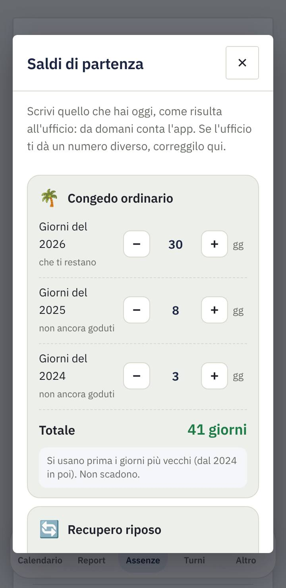
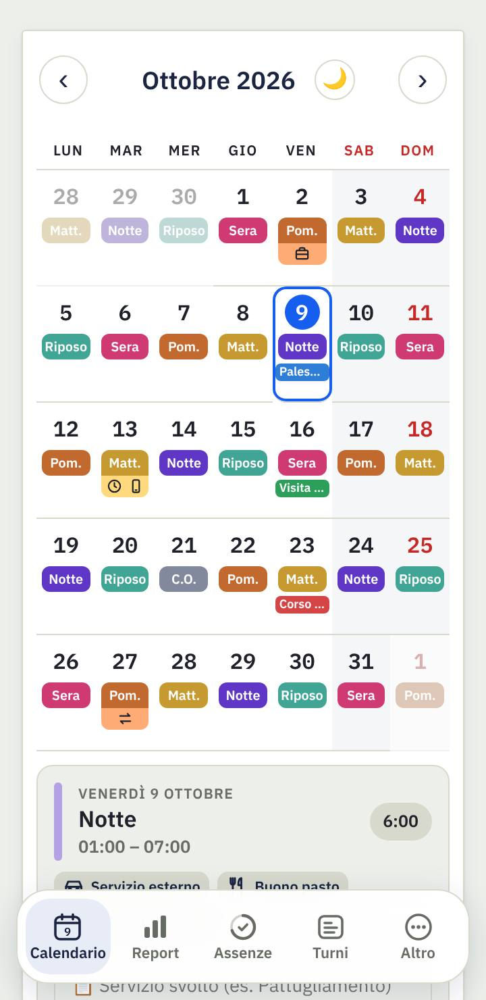
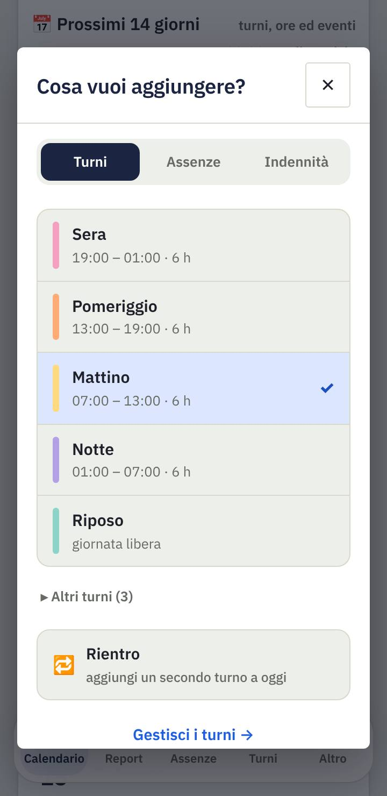
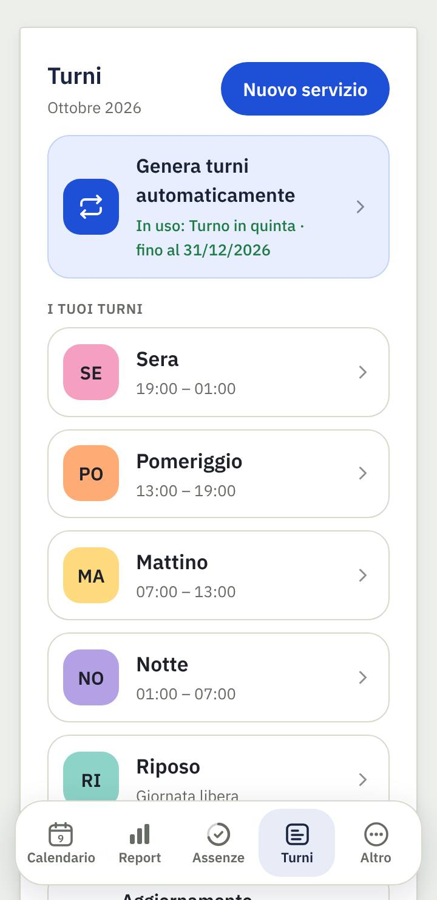
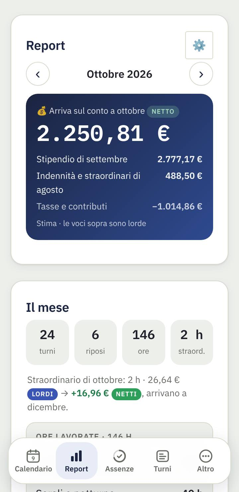
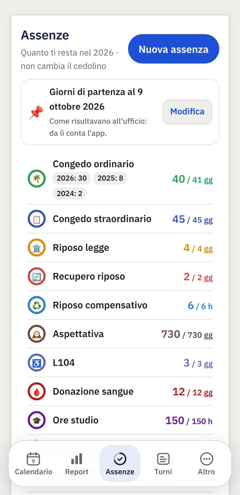
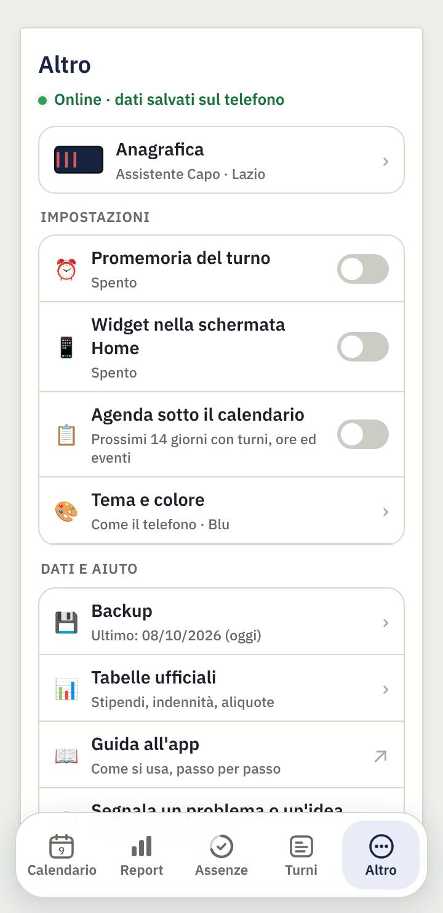

Come si usa l'app, passo per passo · aggiornata alla versione 2.84
1. Primi passi
Al primo avvio l'app ti accompagna in 5 passi:
Chi sei: qualifica, anni di servizio e regione. Servono per stimare stipendio e tasse.
Come lavori: scegli la tua turnazione (es. Turno in quinta) e cosa fai oggi. L'app riempie i prossimi 3 mesi.
Quanto ti resta: congedo ordinario diviso per anno, recuperi e riposo compensativo, come risultano all'ufficio.
Come la vuoi: tema chiaro o scuro, promemoria e widget (all'inizio sono spenti).
Tutto pronto: un riepilogo di quello che hai scelto.
💡 Coniuge, figli over 21 e sindacato li aggiungi dopo in Altro → Anagrafica, nel riquadro "I tuoi dati".

2. Calendario
Tocca un giorno per vederlo sotto il calendario; toccalo di nuovo per cambiare il turno.
Nella finestra "Cosa vuoi aggiungere?" scegli un turno, un'assenza o un'indennità. "Rientro" aggiunge un secondo turno nello stesso giorno.
Modifica apre il giorno completo: orari, straordinario prima o dopo, missione, ordine pubblico, reperibilità, cambio turno.
＋ Evento aggiunge visite, corsi, appuntamenti, anche ripetuti, con promemoria.
I giorni del mese prima e dopo si vedono sbiaditi, per capire come continua la turnazione.

Agenda sotto il calendario
In Altro → Agenda sotto il calendario puoi far comparire, sotto il mese, i prossimi 14 giorni in elenco: turno, orario, ore, indennità ed eventi, con il totale delle ore di ogni settimana.

3. Turni automatici
In Turni → Genera turni automaticamente:
scegli la sequenza (o creane una tua con i tuoi turni);
indica cosa fai il primo giorno;
premi Genera: l'app riempie i giorni fino alla data scelta. Ferie e assenze già inserite non vengono toccate.
Quando la sequenza sta per finire, l'app te lo ricorda: con Continua riparte dal giorno giusto senza sfasare il ciclo.
In Turni trovi anche i tuoi modelli di turno (orari e colori), l'esportazione in Google Calendar e i colori del calendario.

4. Report
In alto: quanto arriva sul conto nel mese, con stipendio, indennità e tasse.
Il mese: turni, riposi, ore, straordinario e le indennità con lordo e netto.
Il cedolino stimato con lordo, trattenute e netto, e lo storico dell'anno.
⚠️ È una stima. Il netto vero può essere diverso di qualche euro: arretrati, conguagli, addizionali comunali, detrazioni personali. Confronta sempre con il cedolino ufficiale.
Le indennità e gli straordinari di un mese arrivano in busta due mesi dopo: il Report lo tiene già in conto.

5. Assenze
In alto: quanti giorni di congedo ordinario ti restano, più permesso breve e recuperi.
Ogni voce ha la sua scheda con l'anello: pieno quando è tutta da usare, si svuota man mano.
Tocca una scheda per i dettagli e per cambiare quanto spetta.
Saldi di partenza
L'app non può sapere quanti giorni avevi prima di usarla. Con Inserisci i saldi di partenza (o Correggi) scrivi:
il congedo ordinario per anno (es. 2026: 37, 2025: 15, 2024: 3): si usano prima i giorni più vecchi e non scadono;
i recuperi riposo e festivo ancora da fare;
le ore di riposo compensativo accumulate.
Da quel giorno conta l'app: toglie i giorni che segni in calendario e a gennaio aggiunge quelli dell'anno nuovo.

6. Altro
Anagrafica: qualifica (con il distintivo del grado), anni, regione, famiglia, sindacato.
Tabelle ufficiali: stipendi, indennità e aliquote usati nei calcoli. Si aggiornano da sole dal sito (vedi Tabelle economiche); le tue modifiche restano.
Promemoria del turno e widget sulla schermata Home.
Tema e colore dell'app.
Segnala un problema o un'idea: apre l'email già scritta.
Backup: salva tutti i dati in un file (sul telefono o su Google Drive).

7. Domande frequenti
Ho cambiato telefono: come recupero i dati?
Sul telefono vecchio: Altro → Backup → Esporta backup (oppure il backup su Google Drive). Sul telefono nuovo installa l'app e usa Importa. I dati stanno solo sul telefono: senza backup non si possono recuperare.
Perché il netto non è uguale alla mia busta paga?
L'app fa una stima con le tabelle ufficiali. Arretrati, conguagli di fine anno, addizionale comunale e detrazioni personali possono cambiare il netto vero di qualche euro.
Ho sbagliato i giorni di congedo iniziali
In Assenze tocca Correggi accanto a "Saldi di partenza" e scrivi i numeri che ti dà l'ufficio oggi.
Ho cambiato turnazione
In Turni → Genera turni automaticamente scegli la nuova sequenza e la data da cui parte: i giorni da quella data vengono riscritti, ferie e assenze restano.
L'app manda i miei dati da qualche parte?
No. Turni, stipendio e assenze restano sul telefono. L'app scarica solo il file pubblico delle tabelle dal sito, una volta a settimana. Vedi l'informativa privacy.
App indipendente, non ufficiale, non affiliata alla Polizia di Stato. Le immagini sono fatte con dati di prova.